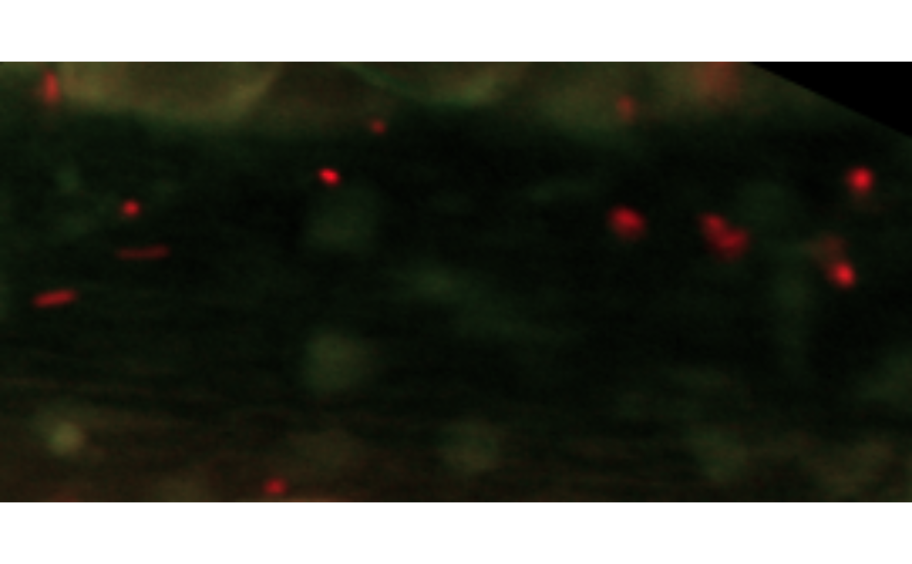

This function combines all classes related to a single experiment in order to deliver a clickable feedback on one of the frames.
snap(
raw.frames,
binary.frames,
particleset,
trajectoryset,
frameID = 1,
infocol = "yellow",
infocex = 1,
showVelocity = FALSE
)A Frames object with the raw frames data
A Frames object with the preprocessed frames data
A ParticleSet object with the particles data
A TrajectorySet object with the trajectories data
The ID of the frame to inspect
The color to use for plotting the contours and the information on the clicked particle
The numeric character expansion value as in cex to be used
for printing the text on the image
Logical, whether to display additional information on the instantaneous velocity of the particle
An image of the selected frame, rendered in R native graphics, and additionally a list with the coordinates as well as the trajectory ID of the particle closest to the clicked location
if (FALSE) data(MesenteriumSubset)
binary.frames <- preprocess.Frames(channel.Frames(MesenteriumSubset,"red"))
particleset <- particles(MesenteriumSubset,binary.frames,"red")
#> Computing features in parallel...
#> Done!
trajectoryset <- trajectories(particleset)
#> Input ParticleSet is not a LinkedParticleSet.
#> Performing linking first with some set of default parameters - you might want to change them according to your scenario...
snap(MesenteriumSubset,binary.frames,particleset,trajectoryset,frameID=1)
#> Error in `$<-.data.frame`(`*tmp*`, "distToThis", value = numeric(0)): replacement has 0 rows, data has 13
